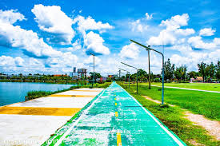
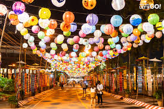
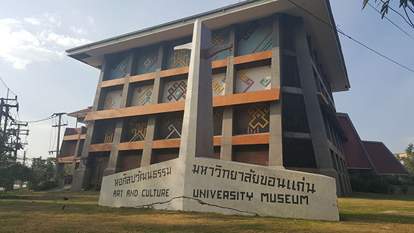
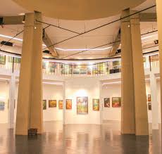
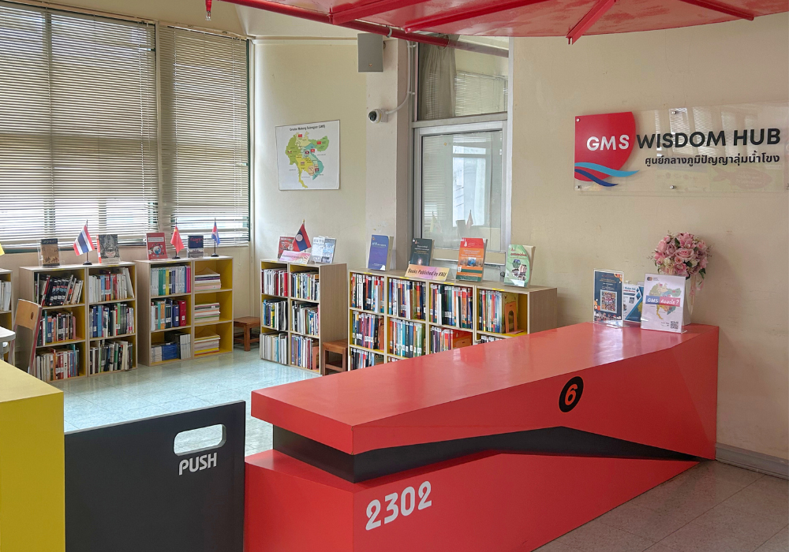

บึงสีฐาน (Sithan Lake)


บึงสีฐานเป็นพื้นที่พักผ่อนยอดนิยมของนักศึกษาและบุคลากรในมหาวิทยาลัย บริเวณรอบบึงมีบรรยากาศร่มรื่น ลมเย็น และเป็นจุดชมพระอาทิตย์ตกที่สวยที่สุดแห่งหนึ่งใน มข.
นอกจากนี้ยังมีกิจกรรมต่าง ๆ เช่น ปั่นจักรยาน เดินออกกำลังกาย นั่งรับประทานอาหารริมบึง หรือถ่ายภาพวิวธรรมชาติ จึงเป็นสถานที่เหมาะสำหรับการพักผ่อนทั้งช่วงเรียนและหลังเลิกเรียน
หอศิลปวัฒนธรรม (KKU Art & Culture Museum)


ที่นี่เป็นศูนย์รวมงานศิลป์และวัฒนธรรมของภาคอีสานและของมหาวิทยาลัย ภายในมีการจัดแสดงนิทรรศการ ทั้งแบบถาวรและแบบหมุนเวียน เช่น งานศิลปะร่วมสมัย ประวัติศาสตร์ ภาพถ่าย และศิลปะวัฒนธรรมพื้นบ้าน
บรรยากาศค่อนข้างเงียบสงบ เหมาะสำหรับผู้ที่ต้องการแรงบันดาลใจ หรือผู้ที่สนใจงานศิลปะและประวัติศาสตร์ของมหาวิทยาลัย
สำนักหอสมุด (Central Library)


ห้องสมุดกลางเป็นพื้นที่เรียนรู้หลักของมหาวิทยาลัยและเป็นแหล่งรวมหนังสือ งานวิจัย สื่อดิจิทัล และพื้นที่ Co-working space ที่ตอบโจทย์ทั้งการอ่านหนังสือ ทำรายงาน พบปะทำงานกลุ่ม หรือเตรียมสอบ
ภายในมีหลายโซน ทั้งโซนเงียบสำหรับสมาธิ และโซนนั่งทำงานสบาย ๆ พร้อมปลั๊กไฟและ Wi-Fi ทำให้เป็นสถานที่ที่นักศึกษานิยมใช้เวลามากที่สุดแห่งหนึ่ง
คอมเพล็กซ์ มข. (KKU Complex)
KKU Complex เป็นศูนย์รวมร้านค้าและบริการภายในมหาวิทยาลัย เช่น ร้านอาหาร ร้านสะดวกซื้อ ร้านเครื่องเขียน ร้านแฟชั่น ธนาคาร และร้านกาแฟ
ที่นี่เหมาะกับการมาใช้บริการประจำวัน ทั้งซื้ออาหาร มาหาเพื่อน หรือพักผ่อนระหว่างเรียน ถือเป็นโซนที่สะดวกที่สุดแห่งหนึ่งของ มข. และเป็นเหมือนจุดศูนย์กลางไลฟ์สไตล์ของนักศึกษา